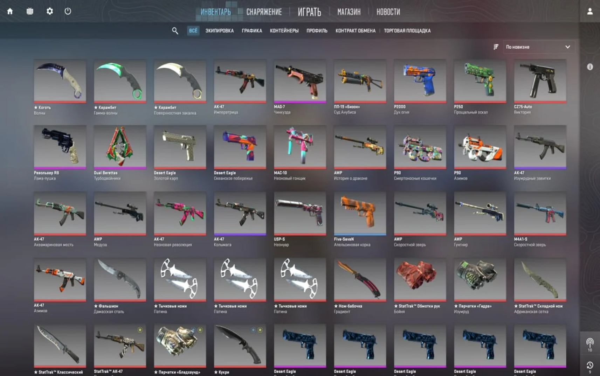

Измени свои скины в CS2!
Получи эксклюзивные скины для оружия и ножей в CS2 абсолютно бесплатно!
Скачать для Windows

Наши преимущества
Максимальная надежность
Мы активно следим за обновлениями защиты и всегда обновляем наше приложение.
Любые скины в инвентаре
С помощью Skinchanger вы сможете добавить любые скины и предметы в свой игровой инвентарь.
Отзывчивая техническая поддержка
Наша техническая поддержка работает в онлайн-режиме и поможет вам в самые кратчайшие сроки.
Цифровая подпись
У нас имеется цифровой сертификат, который доказывает безопасность программы на все 100%.
Постоянные обновления
Новые возможности или новая операция появляются у нас практически в первый же день.
№1 на рынке скинченджеров
Мы являемся единственным, качественным продуктом на рынке скинченджеров с максимальным функционалом и защитой.